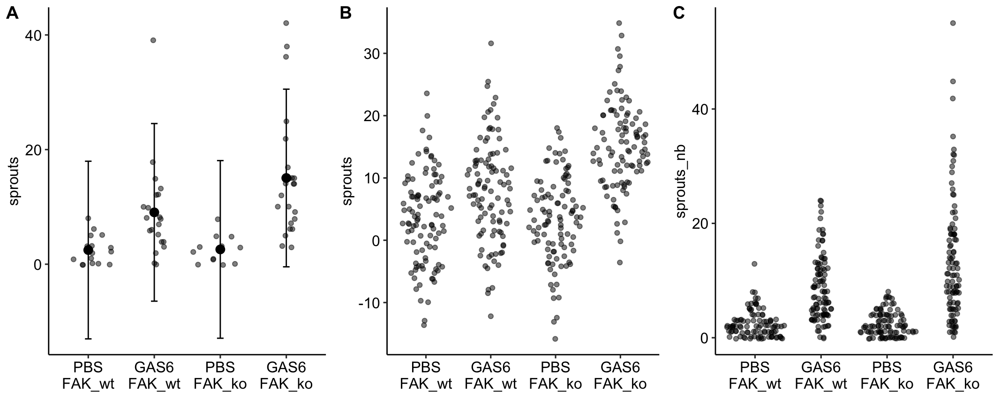

Chapter 15 Linear models with added covariates (“ANCOVA”)
In its most general sense, Covariates are simply the \(X\) variables in a statistical model. With data from experiments, “covariates” more typically refers to continuous \(X\) variables that are added to a model to increase precision of the treatment effects. In observational designs, continuous and categorical covariates might be added to a model to 1) increase predictive ability, 2) because the researcher is interested in specific conditional effects, or 3) to eliminate confounding. These are discussed in later chapters. In this chapter, a single, continuous covariate is added to a linear model. Nothing is fundamentally different if the covariate added is categorical (\(Sex\) is a common categorical covariate) or if multiple covariates are added.
15.1 Adding covariates can increases the precision of the effect of interest
I use fake data to introduce the concept of statistical elimination of a covariate in a statistical model. Here I am modeling the effect of a new drug on blood LDL-C levels. LDL is a kind of lipoprotein, which are particles in the blood that transport fats and cholesterol to and from different tissues. LDL-C is cholesterol associated with LDL particles. LDL-C is considered “bad cholesterol” because LDL is believed to transport cholesterol and other lipids to arterial walls, which is the basis for atherosclerosis.
Thirty applied biostats students are recruited and are randomly assigned to either the “placebo” treatment level or “drug” treatment level. The response is blood LDL-C concentration. The drug manufacturer wants a measure of the effect of the new drug on ldlc.

Figure 15.1: Effect of drug therapy on plasma LDL-C.
The linear model fit to the simulated LDL-C data is
\[\begin{equation} ldlc = \beta_0 + \beta_1 treatment_{drug} + \varepsilon \tag{15.1} \end{equation}\]
where \(treatment_{drug}\) is the dummy variable, which is set to 0 when \(treatment = \mathrm{''placebo''}\) and to 1 when \(treatment = \mathrm{''drug''}\).
The coefficient table is
## Estimate Std. Error t value Pr(>|t|) 2.5 % 97.5 %
## (Intercept) 107.768 0.757 142.441 0 106.219 109.318
## treatment1 -6.723 0.757 -8.886 0 -8.273 -5.173The response-effect plot shows large overlap in the LDL-C response and treatment effect that is small relative to the noise. “No effect of the drug (\(p = .31\))” is an incorrect interpretation of the p-value of the significance test of the estimate of \(\beta_1\). A better interpretation is, the estimated effect is -1.6 but everything from large, negative effects to moderate positive effects are consistent with the data.
As expert biologists, we know that LDL-C is strongly correlated with age and there is a large range in age among the Applied Bistats students. If age contributes to a large fraction of the variance in LDL-C among applied biostats students, then age-related variance might mask the effect of the drug. Here is a plot of LDL-C vs. age, with treatment assignment color coded. Remember, these are the exact same values of LDL-C as in figure ?? above.

Figure 15.2: Linear regression of \(ldlc\) on age fit to the fake LDL-C data. The points are color coded by treatment.
The regression line is the fit of the linear model
\[\begin{equation} ldlc = \beta_0 + \beta_1 age + \varepsilon \tag{15.2} \end{equation}\]
The points are color-coded by treatment level but \(treatment\) is not in model (15.2). The color-coding makes it clear that most of the “placebo” data points are above the line, or have positive residuals from the model, while the “drug” data points are below the line, or have negative residuals from the model. That is, at any specific value of age, there is very small overlap of LDL-C values for drug and for placebo.
What is happening? Age is contributing to the variance of LDL-C, and the noise in \(\varepsilon\) in model (15.1), and this added noise makes decreases the precision in our estimate of the effect of the new drug relative to placebo. When we view the data as in Figure ??, age is masking the effect. If we could somehow measure the effect of the drug at a specific age, then we could get a more precise estimate of the effect. But how to do this? Here are three possible methods. The third is the only one you should use but the second is useful for understanding the third.
We could just analyze a subset of the data, that is, only the cases in which the value of age is nearly equal. This throws away perfectly good data and, consequently, greatly reduces the sample size and thus precision to estimate the effect.
We could first fit model (15.2) and then use the residuals of this fit as a new response variable to estimate the effect of drug treatment (this is what we did by eye in figure 15.2).
step 1:
\[\begin{equation} ldlc = \beta_0 + \beta_1 age + \varepsilon \end{equation}\]
step 2:
\[\begin{equation} ldlc\_residual = \beta_0 + \beta_1 treatment_{drug} + \varepsilon \tag{15.3} \end{equation}\]
Here, I use this two-stage method because it is useful to introduce the concept of adjusting for a covariate in a linear model, where the covariate here is \(age\). But, in general, don’t do this – the method usually “works” pretty well if the mean of the covariate (the step 1 \(X\) variable) is nearly the same in both treatment levels but artifacts that lead to wrong inference are introduced if the mean of the covariate is far apart.

Figure 15.3: Effect of drug therapy on plasma LDL-C using residuals. Don’t do this!
Figure ??A is an effect-response plot of the effect of treatment on the LDL-C adjusted for age using the two-step method. Figure ??B is the original (not adjust) effect-response plot. The scale of both plots are the same. This means that the response axis has the same length in both plots and the effects axis has the same length in both plots. This makes comparing the two easy. Two patterns are conspicuous
- The age-adjusted means in Figure ??A are further apart (the difference is bigger) then the unadjusted means in Figure ??B. This is seen in both the response and the effects components of the plot.
- The spread of the residual LDL-C measures within each treatment level in Figure ??A is less than the spread of the raw LDL-C measures in Figure ??B.
- The confidence interval of the effect (difference in means) is smaller using the adjusted model (Figure ??A) than in the unadjusted model (Figure ??B)
- The p-value of the effect (difference in means) is smaller using the adjusted model (Figure ??A) than in the unadjusted model (Figure ??B)
These patterns are quantified by the Estimates and SEs of the coefficient table. Again, I show both for comparison. Can you match comparisons 1-4 above with the statistic in the coefficient table?
Coefficient table of two-step, “adjusted” model (adjusting for \(age\)):
## Estimate Std. Error t value Pr(>|t|) 2.5 % 97.5 %
## (Intercept) 0.000 0.506 0.000 1 -1.036 1.036
## treatment1 -4.508 0.506 -8.911 0 -5.544 -3.471Coefficient table of unadjusted model (adjusting for \(age\)):
## Estimate Std. Error t value Pr(>|t|) 2.5 % 97.5 %
## (Intercept) 107.768 0.757 142.441 0 106.219 109.318
## treatment1 -6.723 0.757 -8.886 0 -8.273 -5.173It is clear from the plots and the tables that this two-stage adjustment increases the precision of the estimates of the means and the differences in means by eliminating the contribution of Age to the variance in LDL-C.
- The best practice for adjusting for a covariate (or the statistical elimination of a covariate) is to simply add the covariate to the linear model.
\[\begin{equation} ldlc = \beta_0 + \beta_1 age + \beta_2 treatment_{drug} + \varepsilon \tag{15.4} \end{equation}\]
## Estimate Std. Error t value Pr(>|t|) 2.5 % 97.5 %
## (Intercept) 75.90 3.390 22.40 5.71e-19 68.900 82.80
## age 1.26 0.133 9.47 4.46e-10 0.988 1.53
## treatment1 -5.27 0.401 -13.20 2.91e-13 -6.100 -4.45Again, compare the coefficient table from the model fit without the covariate.
## Estimate Std. Error t value Pr(>|t|) 2.5 % 97.5 %
## (Intercept) 108.00 0.757 142.00 1.33e-41 106.00 109.00
## treatment1 -6.72 0.757 -8.89 1.22e-09 -8.27 -5.17- The adjusted effect is larger (-4.5 vs. -1.6)
- The adjusted SE of the difference is smaller (0.8 vs. 1.5)
- The adjusted CIs are narrower (-6.1, -2.8 vs. -4.7, 1.6)
- The p-value of the adjusted difference is smaller (0.000007 vs. 0.31)
A plot of the model is

Figure 15.4: Effect of drug therapy, adjusted for age, on plasma LDL-C.
15.2 Understanding a linear model with an added covariate – heart necrosis data
1-Deoxydihydroceramide causes anoxic death by impairing chaperonin-mediated protein folding
In this article, the researchers are investigating the effects of specific sphingolipids on hypoxia (low O2) in the heart. This hypoxia results in necrosis (death) of heart tissue. The researchers are specifically looking at the sphingolipid 1-deoxydihydroceramide (DoxDHCer), which is derived from 1-deoxysphinganine6 (DoxSa).
In the experiment for Figure 4h, the researchers measured the effect of three treatments on necrosis.
- Vehicle – there is no “cardioprotection” from the hypoxia-producing sphingolipids. This is the “control”. We expect more necrotic area in this group. 2 Myriocin – a drug that inhibits the enzyme that iniates sphingolipid production. This drug should provide protection from the hypoxia-producing sphingolipids. We expect less necrotic area (or, cardioprotection) in this group.
- Myriocin + DoxSa – DoxSa is the specific sphingolipid that the researchers believe cause the hypoxia/necrosis. The drug should inhibit the production of sphingolipids but the added DoxSa should reverses the protective effect of the drug. If there is a reversal of the protection, then this supports the hypothesis that DoxSa is the sphingolipid causing the hypoxia/necrosis.
The response (\(Y\)) variable is \(area\_of\_necrosis\) – the measured “area” of the necrotic tissue (area is used here in the sense of “region” and not in the sense of length times width). The covariate is \(area\_at\_risk\) – the area of heart tissue that is susceptible to necrosis.
15.2.1 Fit the model
The verbal model with added covariate is
\(area\_of\_necrosis \sim area\_at\_risk + treatment\;\;\;(\mathcal{M}_1)\).
which I’ll name model \(\mathcal{M}_1\). To understand the model coefficients, it helps to expand model \(\mathcal{M}_1\) into the full linear model.
\[\begin{equation} area\_of\_necrosis = \beta_0 + \beta_1 area\_at\_risk + \beta_2 treatment_{myriosin} + \beta_3 treatment_{Myriocin\;+\;DoxSa} + \varepsilon \tag{15.5} \end{equation}\]
The model includes parameters for the effects of area at risk (\(\beta_1\)), the myriosin treatment (\(\beta_2\)) and the myriosin + DoxSa treatment (\(\beta_3\)). I explain the interpretation of these effects in “Interpretation of the model coefficients” below.
15.2.2 Plot the model

Figure 15.5: The effect of treatment on area of necrosis, adjusted for area of risk.
15.2.3 Interpretation of the model coefficients
fig4h_m1_coef <- cbind(coef(summary(fig4h_m1)),
confint(fig4h_m1))
signif(fig4h_m1_coef, digits = 3)## Estimate Std. Error t value Pr(>|t|) 2.5 % 97.5 %
## (Intercept) -5.980 2.1400 -2.79 8.85e-03 -10.300 -1.610
## area_at_risk 0.453 0.0587 7.73 8.28e-09 0.334 0.573
## treatment1 2.090 0.7230 2.89 6.89e-03 0.615 3.560
## treatment2 -1.030 0.7640 -1.34 1.88e-01 -2.580 0.530- The estimate in the “(Intercept)” row (\(b_0\)) is the expected value of the reference (here, this is the Vehicle group) when \(area\_at\_risk=0\). Using Figure 15.5, this can be visualized as the value of \(Y\) where the Vehicle line (the regression line for the reference group) crosses the y-axis (at \(X = 0\)). This is not a meaningful estimate since the area at risk in all hearts is above zero.
- The estimate in the “area_at_risk” row (\(b_1\)) is a common slope for all three regression lines. Some might refer to this slope as the “effect” of \(area\_at\_risk\) on \(area\_of\_necrosis\) but I recommend against using this causal language because the \(area\_at\_risk\) is not randomly assigned – its purpose in this model (but not necessarily all linear models with an added covariate) is not for interpretation but for improving inference in the expimental treatment factor.
- The estimate in the “treatmentMyriocin” row (\(b_2\)) is the effect of \(Myriocin\) on \(area\_of\_necrosis\) conditional on (or adjusted for) \(area\_at\_risk\). A frequent phrase is “the estimate controlling for area at risk” but avoid this because “control” implies experimenter intervention and this is not true for \(area\_at\_risk\). The value is the difference in the elevation of the regression line for the reference group and that for the Myriocin group. This difference is equal to the difference in conditional expectations at a specific value of the covariate.
\[\begin{equation} b_2 = \mathrm{E}(area\_of\_necrosis|treatment = "Myriocin", X = x) - \mathrm{E}(area\_of\_necrosis|treatment = "Vehicle", X = x) \end{equation}\]
- The estimate in the “treatmentMyriocin + DoxSa” row (\(b_3\)) is the effect of \(Myriocin + DoxSa\) on \(area\_of\_necrosis\) conditional on (or adjusted for) \(area\_at\_risk\). It’s interpretation is similar to that for \(b_2\).
How do we summarize these interpretations given the motivating hypothesis? The results do not support the hypothesis. If DoxSa is one of the sphingolipids inducing hypoxia/necrosis, then we’d expect the Myriocin + DoxSa line to be elevated above the Myriocin line. But the coefficient table “tests” this prediction only indirectly. The explicit statistic for this prediction is the (Myriocin + DoxSa) - Myriocin contrast in the contrast table below.
15.2.4 Everything adds up
Remember that everything adds up in a linear model. A regression line is a line of expected values (the expectation of \(Y\) conditional on \(X\)). The point on the Vehicle line at \(area\_of\_risk = 30\) is \(b_0 + b_1 \cdot 30\). The point on the “Myriocin” line at \(area\_of\_risk = 30\) is \(b_0 + b_1 \cdot 30 + b_2\). And, the point on the “Myriocin + DoxSa” line at \(area\_of\_risk = 30\) is \(b_0 + b_1 \cdot 30 + b_3\). Understanding how the components of the linear model add up gives you phenomenonal cosmic power in statistical analysis.
15.2.5 Interpretation of the estimated marginal means
## treatment emmean SE df lower.CL upper.CL
## Vehicle 11.98 0.839 32 10.3 13.7
## Myriocin 8.87 0.916 32 7.0 10.7
## Myriocin + DoxSa 8.83 1.045 32 6.7 11.0
##
## Confidence level used: 0.95The values in the column “emmean” are the expected values of each group when (“conditional on”) \(area\_at\_risk\) is equal to the mean \(area\_at\_risk\).
15.2.6 Interpretation of the contrasts
fig4h_m1_pairs <- contrast(fig4h_m1_emm,
method = "revpairwise",
adjust = "none") %>%
summary(infer = TRUE)
fig4h_m1_pairs## contrast estimate SE df lower.CL upper.CL t.ratio
## Myriocin - Vehicle -3.1139 1.23 32 -5.62 -0.611 -2.534
## (Myriocin + DoxSa) - Vehicle -3.1485 1.37 32 -5.93 -0.367 -2.306
## (Myriocin + DoxSa) - Myriocin -0.0346 1.43 32 -2.95 2.881 -0.024
## p.value
## 0.0164
## 0.0278
## 0.9809
##
## Confidence level used: 0.95The values in the column “estimate” are the differences between the estimated marginal means in the estimated marginal means table. The first two contrasts are equal to the coefficients \(b_2\) and \(b_3\) in the coefficient table.
15.2.7 Adding the covariate improves inference
Compare the effects in Model \(\mathcal{M}_1\) (with the added covariate) to the effects in a linear model without the added covariate.
## Estimate Std. Error t value Pr(>|t|) 2.5 % 97.5 %
## (Intercept) 10.10 0.874 11.500 4.06e-13 8.31 11.9000
## treatment1 1.12 1.190 0.946 3.51e-01 -1.29 3.5400
## treatment2 -2.54 1.230 -2.060 4.72e-02 -5.04 -0.0338Inference from these two models is very different. From the model adjusting for area at risk (Model \(\mathcal{M}_1\)), we would conclude “Unexpectedly, the estimated Myriocin + DoxSa effect (-3.2 mg, 95% CI: -5.9, -0.4) is effectively as big as the Myriocin alone effect.” By contrast, using the model without the covariate, we would conclude “Relative to the Myriocin effect, the estimated Myriocin + DoxSa effect is small (.29 mg), and there is large uncertainty in its direction and magnitude (95% CI: -4.1, 4.7).” (Note that the authors published a different conclusion to either of these. I cannot recover the results leading to their conclusion using the methods published by the authors.)
15.3 Understanding interaction effects with covariates
15.3.1 Fit the model
When we add a continuous covariate to a model we sometimes want to model the interaction with the categorical factor variable. An interaction effect represents how the effect of one variable changes given the level of a second variable. The verbal model with an added interaction effect is
\(area\_of\_necrosis \sim area\_at\_risk + treatment + area\_at\_risk \times treatment\;\;\;(\mathcal{M}_2)\)
which I’ll refer to as Model \(\mathcal{M}_2\). To understand the model coefficients, it helps to expand this into the full linear model.
\[\begin{align} area\_of\_necrosis = \beta_0 &+ \beta_1 area\_at\_risk + \beta_2 treatment_{myriosin} + \beta_3 treatment_{Myriocin\;+\;DoxSa}\\ &+ \beta_4 area\_at\_risk \cdot treatment_{myriosin}\\ &+ \beta_5 area\_at\_risk \cdot treatment_{Myriocin\;+\;DoxSa}\\ &+ \varepsilon \tag{15.6} \end{align}\]
In addition to the effects of the myriosin (\(\beta_2\)) and the myriosin + DoxSa (\(\beta_3\)) treatments of Model \(\mathcal{M}_1\), Model \(\mathcal{M}_2\) includes coefficients for two interaction effects, the interaction between myriosin and area at risk (\(\beta_4\)) and the interaction between myriosin + DoxSa and area at risk (\(\beta_4\)). The parameters \(\beta_1\) and \(\beta_2\) are additive effects because they are linear (additive) “in the \(X\)” variables. The parameters \(\beta_3\) and \(\beta_4\) are non-additive effects because they are not linear “in the \(X\)” variables – these effects are coefficients of an \(X\) that is the product of two variables. You can see this in the model equation but I explain this further below.
For the goals of the researchers in the heart necrosis study, we specifically would not want to model the interaction. Nevertheless, we would want to plot the interaction effect during the “Step 2: examine the data” phase of analysis to be sure that an additive model is a reasonable model given the data.
15.3.2 Plot the model with interaction effect
Figure 15.6: The effect of treatment on area of necrosis, adjusted for area of risk.
15.3.3 Interpretation of the model coefficients
fig4h_m2_coef <- cbind(coef(summary(fig4h_m2)),
confint(fig4h_m2))
round(fig4h_m2_coef[,c(1,2)], digits = 2)## Estimate Std. Error
## (Intercept) -5.31 2.18
## area_at_risk 0.43 0.06
## treatment1 -1.24 2.79
## treatment2 3.66 3.12
## area_at_risk:treatment1 0.10 0.08
## area_at_risk:treatment2 -0.14 0.09- The estimate in the “(Intercept)” row (\(b_0\)) is the expected value of the reference (here, this is the Vehicle group) when \(area\_at\_risk=0\). This is the same interpretation of the intercept in the additive model (Model \(\mathcal{M}_1\)) but the value is different. This is because the slope coefficient (\(b_1\)) estimated in Model \(\mathcal{M}_1\) is a common slope (to all three groups) estimated by pooling data from all three groups. The slope coefficient in the non-additive model (Model \(\mathcal{M}_2\)) is computed from just the reference data. Because the slope differs between Model \(\mathcal{M}_1\) and Model \(\mathcal{M}_2\), the intercept differs (think about why they are necessarily related). As in Model \(\mathcal{M}_1\), the value and inferential statistics are meaningful for this parameterization but there are slight modifications of the model that can make this meaningful.
- The estimate in the “area_at_risk” row (\(b_1\)) is the slope of the regression line for the reference (Vehicle) group, that is, the slope conditional on \(treatment = \mathrm{''Vehicle''}\)
- The estimate in the “treatmentMyriocin” row (\(b_2\)) is the effect of \(Myriocin\) on \(area\_of\_necrosis\) conditional on \(area\_at\_risk = 0\). Note the difference in interpretation with \(b_2\) in Model \(\mathcal{M}_1\). The difference is because of the interaction. The effect of \(Myriocin\) on \(area\_of\_necrosis\) is no longer constant for all values of \(area\_at\_risk\). This is easily seen in Figure 15.6, where the effect of Myriocin (the vertical distance between the Vehicle and Myriocin line) is very small at small values of area at risk but very large at large areas at risk.
- The estimate in the “treatmentMyriocin + DoxSa” row (\(b_3\)) is the effect of \(Myriocin + DoxSa\) on \(area\_of\_necrosis\) conditional on \(area\_at\_risk = 0\). It’s interpretation is similar to that for \(b_2\).
- The estimate in the “area_at_risk:treatmentMyriocin” row (\(b_4\)) is the interaction effect between area at risk and Myriocin. It’s value is the difference between the slope of the regression line through the Myriocin points in Figure 15.6 and the slope of the regression line through the reference (Vehicle) points in Figure 15.6. Consequently, the slope of the regression line through the Myriocin points is \(b_1 + b_4\).
- The estimate in the “area_at_risk:treatmentMyriocin + DoxSa” row (\(b_5\)) is the interaction effect between area at risk and Myriocin + DoxSa It’s value is the difference between the slope of the regression line through the Myriocin + DoxSa points in Figure 15.6 and the slope of the regression line through the reference (Vehicle) data in Figure 15.6. Consequently, the slope of the regression line through the Myriocin + DoxSa points is \(b_1 + b_5\).
Interaction effects are differences in slopes (this is also true with interactions between two factor variables, even though we usually describe this as “differences in differences”) and these difference are easily seen by inspection of a plot similar to that in Figure 15.6. The bigger the interaction, the less parallel the regression line.
15.3.4 What is the effect of a treatment, if interactions are modeled? – it depends.
A very useful way to remember what an interaction is is “it depends”. What is the effect of Myriocin on area at risk? With an interaction term in the linear model, the answer is “it depends”. It depends on the level of \(area\_at\_risk\). At small values of area at risk, the effect of Myriocin is very small. At large values of area at risk, the effect of Myriocin is large. Likewise, what is the effect of area at risk on necrosis? It depends (if interactions are modeled). It depends on the level of treatment, for example the effect in the Myriocin group is smaller (a smaller slope) than the effect in the Vehicle group. “It depends” is the hallmark of interactions – the effect of one variable on the outcome depends on the level of a second variable.
15.3.5 Which model do we use, \(\mathcal{M}_1\) or \(\mathcal{M}_2\)?
The answer to this question depends partly on our goals. If we are explicitly interested in measuring an interaction effect (perhaps some theory predicts an positive interaction) then we would necesarily add interaction effects to the model. But if we are interested in estimating a treatment effect conditional on a covariate, then we don’t include the interaction. Remember that a purpose of initial explorations of data (“Step 2 – examine the data”) is to help decide which model to specify in the model formula. If an initial plot shows large interactions between treatment levels and the covariate, then adjusting for the covariate won’t work, or at least won’t work without additional complexity to the interpretation. “Large interactions” of course raises the question, how large is too larege to ignore interactions? Many textbooks in biostatistics recommend using an interaction p-value to make this decision. I disagree. There is no objective answer to the question. We lose information with all models – that is what we do in science. It is up to the researcher to be transparent with all decisions. If an additive (no interactions) model is used to condition on (adjust for) a covariate, the researcher should use the supplement to plot the model with interactions as evidence of why this decision is reasonable.
15.4 Understanding ANCOVA tables
15.5 Working in R
15.5.1 Importing the heart necrosis data
data_folder <- "data"
data_from <- "1-Deoxydihydroceramide causes anoxic death by impairing chaperonin-mediated protein folding"
file_name <- "42255_2019_123_MOESM7_ESM.xlsx"
file_path <- here(data_folder, data_from, file_name)
sheet_i <- "Figure 4h"
fig4h_1 <- read_excel(file_path,
sheet = sheet_i,
range = "A5:B19",
col_names = TRUE) %>%
clean_names() %>%
data.table()
fig4h_2 <- read_excel(file_path,
sheet = sheet_i,
range = "D5:E17",
col_names = TRUE) %>%
clean_names() %>%
data.table()
fig4h_3 <- read_excel(file_path,
sheet = sheet_i,
range = "G5:H15",
col_names = TRUE) %>%
clean_names() %>%
data.table()
fig4h <- rbind(data.table(treatment = "Vehicle", fig4h_1),
data.table(treatment = "Myriocin", fig4h_2),
data.table(treatment = "Myriocin + DoxSa", fig4h_3))
treatment_levels <- c("Vehicle", "Myriocin", "Myriocin + DoxSa")
fig4h[, treatment := factor(treatment, levels = treatment_levels)]15.5.2 Fitting the model
For an additive model, add the covariate to the model formula using the + operator. The order of the variables doesn’t matter (the right-hand-side of the model formula could be treatment + area_at_risk).
For an nonadditive model with interactions, add the covariate to the model formula using the * operator. ~ area_at_risk * treatment is a shortcut to the full model formula, which is 1 + area_at_risk + treatment + area_at_risk * treatment. R expands the short formula to the full formula automatically. Again, the order of the variables doesn’t matter (the right-hand-side of the model formula could be treatment * area_at_risk).
15.5.3 Using the emmeans function
## treatment emmean SE df lower.CL upper.CL
## Vehicle 11.98 0.839 32 10.3 13.7
## Myriocin 8.87 0.916 32 7.0 10.7
## Myriocin + DoxSa 8.83 1.045 32 6.7 11.0
##
## Confidence level used: 0.95## area_at_risk treatment emmean SE df lower.CL upper.CL
## 35 Vehicle 11.98 0.839 32 10.3 13.7
## 35 Myriocin 8.87 0.916 32 7.0 10.7
## 35 Myriocin + DoxSa 8.83 1.045 32 6.7 11.0
##
## Confidence level used: 0.95# recenter emms at the mean of the vehicle group
vehicle_mean_x <- mean(fig4h[treatment == "Vehicle",
area_at_risk])
m1_emm_2 <- emmeans(m1,
specs = c("area_at_risk","treatment"),
at = list(area_at_risk = vehicle_mean_x))
m1_emm_2## area_at_risk treatment emmean SE df lower.CL upper.CL
## 33.3 Vehicle 11.21 0.833 32 9.51 12.90
## 33.3 Myriocin 8.09 0.903 32 6.25 9.93
## 33.3 Myriocin + DoxSa 8.06 1.082 32 5.85 10.26
##
## Confidence level used: 0.95## treatment mean
## 1: Vehicle 11.206580
## 2: Myriocin 7.546081
## 3: Myriocin + DoxSa 11.49931915.5.4 ANCOVA tables
If you are going to report statistics from an ANCOVA table, be sure that what you report is what you think you are reporting – it is very easy to get this wrong in R. One way to easily get a table using Type II or III sums of squares is to set the contrast option of the factor variable to contr.sum (this tells R to use deviation coding to form the model matrix for the linear model) and then use the function Anova from the car package (not base R anova).
- It is safest to set this with the
lmfunction itself. - The coefficients of the linear model will have a different interpretation than that given above. Either understand the new interpretation (not given here) or fit two models, one without the reset contrasts and one with the reset contrasts.
- The estimated marginal mean table and the contrast table are the same, regardless of how contrasts are set in the linear model.
- Many websites show code that changes the default coding in the R session. I strongly caution against this. If you don’t change it back, then you are likely to misinterpret coefficients in later analyses (see point 2).
For additive models, use Type II sum of squares (Type III will give same results),
## Anova Table (Type II tests)
##
## Response: area_of_necrosis
## Sum Sq Df F value Pr(>F)
## treatment 82.04 2 4.2195 0.02364 *
## area_at_risk 580.25 1 59.6874 8.28e-09 ***
## Residuals 311.09 32
## ---
## Signif. codes: 0 '***' 0.001 '**' 0.01 '*' 0.05 '.' 0.1 ' ' 1For non-additive models with interactions
- The statistics for the interaction effect are the same, regardless of the sum of squares used.
- The interpretation of the main effects is problematic, at best. This is discussed more in the ANOVA chapter.
- Some statisticians recommend using Type III sums of squares. The effect of $treatment* has a very specific interpretation with Type III – it is the effect when the covariate = 0. This can be biologically relevant if the covariate data is re-centered.
# for coefficients
m2 <- lm(area_of_necrosis ~ treatment * area_at_risk,
data = fig4h)
# for anova
m2_aov <- lm(area_of_necrosis ~ treatment * area_at_risk,
data = fig4h,
contrasts = list(treatment = contr.sum))## Anova Table (Type II tests)
##
## Response: area_of_necrosis
## Sum Sq Df F value Pr(>F)
## treatment 82.04 2 4.3369 0.02216 *
## area_at_risk 580.25 1 61.3485 9.685e-09 ***
## treatment:area_at_risk 27.34 2 1.4453 0.25163
## Residuals 283.75 30
## ---
## Signif. codes: 0 '***' 0.001 '**' 0.01 '*' 0.05 '.' 0.1 ' ' 1## Anova Table (Type III tests)
##
## Response: area_of_necrosis
## Sum Sq Df F value Pr(>F)
## (Intercept) 56.06 1 5.9270 0.02107 *
## treatment 12.98 2 0.6863 0.51116
## area_at_risk 491.92 1 52.0087 5.012e-08 ***
## treatment:area_at_risk 27.34 2 1.4453 0.25163
## Residuals 283.75 30
## ---
## Signif. codes: 0 '***' 0.001 '**' 0.01 '*' 0.05 '.' 0.1 ' ' 115.5.5 Plotting the model
15.5.5.1 Using ggpubr
ggpubr will only plot the model with interactions.
ggscatter(data = fig4h,
x = "area_at_risk",
y = "area_of_necrosis",
color = "treatment",
add = "reg.line",
ylab = "Area of necrosis (mg)",
xlab = "Area at risk (mg)",
palette = pal_okabe_ito
)
15.5.5.2 ggplot2
# pal_batlow <- scico(n, alpha = NULL, begin = 0, end = 1, direction = 1, palette = "batlow")
m1 <- lm(area_of_necrosis ~ area_at_risk + treatment,
data = fig4h)
gg <- ggplot(fig4h,
aes(x = area_at_risk,
y = area_of_necrosis,
color = treatment)) +
geom_point(aes(color=treatment)) +
geom_smooth(method = "lm",
mapping = aes(y = predict(m1, fig4h))) +
scale_color_manual(values = pal_okabe_ito,
name = NULL) +
# scale_color_manual(values = pal_batlow,
# name = NULL) +
ylab("Area of necrosis (mg)") +
xlab("Area at risk (mg)") +
theme_pander() +
theme(legend.position="bottom") +
NULL
gg
15.5.5.3 A response-effects plot using ggplot2
m1 <- lm(area_of_necrosis ~ area_at_risk + treatment, data = fig4h)
b <- coef(m1)
groups <- levels(fig4h$treatment)
line_data <- fig4h[, .(min_x = min(area_at_risk),
max_x = max(area_at_risk)), by = treatment]
line_data[, dummy1 := ifelse(treatment == "Myriocin", 1, 0)]
line_data[, dummy2 := ifelse(treatment == "Myriocin + DoxSa", 1, 0)]
line_data[, y_min := b[1] + b[2]*min_x + b[3]*dummy1 + b[4]*dummy2]
line_data[, y_max := b[1] + b[2]*max_x + b[3]*dummy1 + b[4]*dummy2]
gg_response <- ggplot(data = fig4h,
aes(x = area_at_risk,
y = area_of_necrosis,
color = treatment)) +
# points
geom_point(size = 2) +
geom_segment(data = line_data,
aes(x = min_x,
y = y_min,
xend = max_x,
yend = y_max)) +
scale_color_manual(values = pal_okabe_ito,
name = NULL) +
ylab("Area of necrosis (mg)") +
xlab("Area at risk (mg)") +
theme_pubr() +
theme(legend.position="bottom") +
NULL
#gg_responsem1_emm <- emmeans(m1, specs = "treatment")
m1_pairs <- contrast(m1_emm,
method = "revpairwise",
adjust = "none") %>%
summary(infer = TRUE) %>%
data.table()
# pvalString is from package lazyWeave
m1_pairs[ , p_pretty := pvalString(p.value)]
# also create a column with "p-val: "
m1_pairs[ , pval_pretty := paste("p = ", p_pretty)]
contrast_order <- m1_pairs[, contrast]
m1_pairs[, contrast := factor(contrast, contrast_order)]
gg_effect <- ggplot(data = m1_pairs,
aes(y = contrast,
x = estimate)) +
# confidence level of effect
geom_errorbar(aes(xmin = lower.CL,
xmax = upper.CL),
width = 0,
color = "black") +
# estimate of effect
geom_point(size = 3) +
# draw a line at effect = 0
geom_vline(xintercept = 0, linetype = 2) +
# p-value. The y coordinates are set by eye
annotate(geom = "text",
label = m1_pairs$pval_pretty,
y = 1:3,
x = 4.5) +
# x-axis label and aesthetics
xlab("Effect (mg)") +
ylab("Contrast") +
coord_cartesian(xlim = c(-8,5.5)) +
scale_x_continuous(position="top") +
theme_pubr() +
# theme(axis.title.x = element_blank()) +
NULL
# gg_effect15.6 Best practices
15.6.1 Do not use a ratio of part:whole as a response variable – instead add the denominator as a covariate
15.6.2 Do not use change from baseline as a response variable – instead add the baseline measure as a covariate
15.6.3 Do not “test for balance” of baseline measures
A test of the null hypothesis of no difference in mean at baseline is a “test for balance.” Researchers frequently test for balance at baseline and use the p-value of the test to decide the next step: 1) if \(p > 0.05\), conclude that the pre-treatment means “do not differ” and use something like a simple t test of the post-treatment means, 2) if \(p < 0.05\), then use the change score, or the percent change, as the response in a simple t-test, or 3) if \(p < 0.05\), then use use a linear model with the pre-treatment value as a covariate. Here, and in general, hypothesis tests used to decide which of several ways to proceed do not make sense. First, a null-hypothesis significance test cannot tell you that there is “no difference” – this is not what null-hypothesis tests do. Second, any \(p\)-value after the initial test isn’t strictly valid as it does not take into account this decision step, but this is minor. Third, it doesn’t matter; there will always be some difference in the actual means of the initial measures and, consequently, the conditional expectation of the final measures, or change in measures, or percent change will be dependent on this initial difference. So, if one has initial measures, one should use an linear model that adjusts for baseline measures to estimate the treatment effect in pre-post designs. And, if one isn’t planning on taking an initial measure, then maybe you should, because the initial measure used in a linear model allows a better estimate of the treatment effect, as discussed above in Adding covariates can increases the precision of the effect of interest.